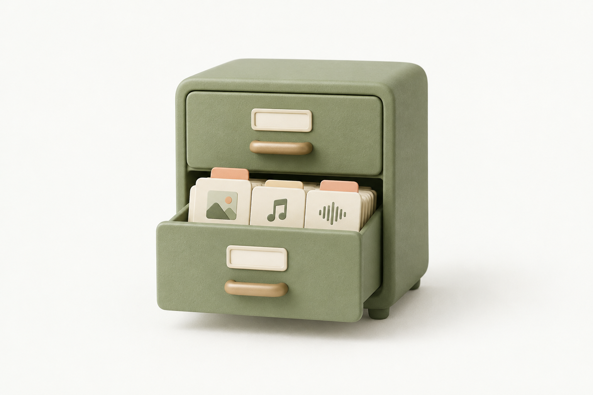

내 사진은 내 기기에
사진을 서버로 보내지 않아
개인적인 사진도 직접 관리해요.
소중한 순간은 그대로, 파일은 더 가볍게.
설치도 가입도 없이 사진 한 장으로 시작해요.

사진의 크기는 그대로, 파일의 무게만 가볍게.
⌁ 서버에 저장하지 않아요. 모든 처리는 이 브라우저에서 이루어져요.
투명한 영역은 흰색으로 바뀌어요.
사진을 선택하면 원본 크기를 확인할 수 있어요.
사진을 서버로 보내지 않아
개인적인 사진도 직접 관리해요.
사진을 고르고 품질만 조절하면
바로 저장할 수 있어요.
설치도 회원가입도 없이
브라우저에서 바로 사용하세요.
가로·세로 픽셀 수는 유지하고 저장 품질과 형식을 바꿔 파일 용량을 줄여요. 원본이 이미 잘 압축되어 있다면 결과가 더 커질 수 있어요.
30MB 이하의 JPG, PNG, WebP 정지 이미지를 지원해요. 큰 이미지는 기기 메모리 보호를 위해 최대 2,400만 화소, 한 변 12,000픽셀까지만 처리해요. 움직이는 WebP는 정지 이미지로 저장돼요.
원본 파일은 수정하지 않아요. 압축한 사진은 새로운 파일로 다운로드해요. 저장 과정에서 촬영 정보 등 메타데이터가 제거될 수 있어요.